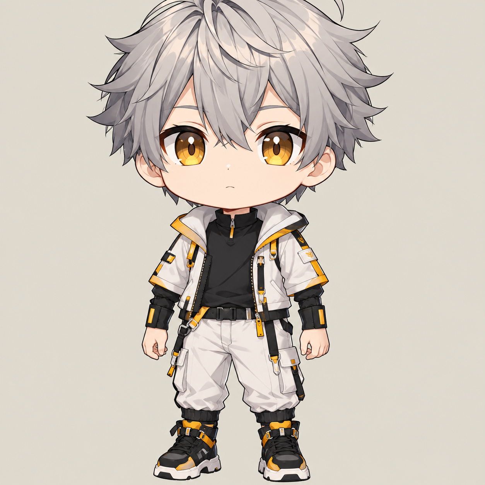

Website Portofolio
Website personal untuk memperkenalkan profil, kemampuan, dan tautan platform digital dalam satu halaman.

Beberapa karya dan proses kreatif yang saya kerjakan di bidang desain dan pengembangan web.
Website personal untuk memperkenalkan profil, kemampuan, dan tautan platform digital dalam satu halaman.